Princeton’s campus is divided into six residential colleges, each of which has its creatively-titled listserv: ButlerBuzz, MatheyMail, Re-InnFormer, RockyWire, WhitmanWire, WilsonWire.
While everyone's automatically put on their own residential college's list, anyone can sign up for one.[1] Wanting to see what's going on on campus (but mostly to seem like I was getting more email), I signed myself onto all six!
I scraped 2026 emails over 48 days, from October 14, 2013 to November 29, 2013. Here's the breakdown:
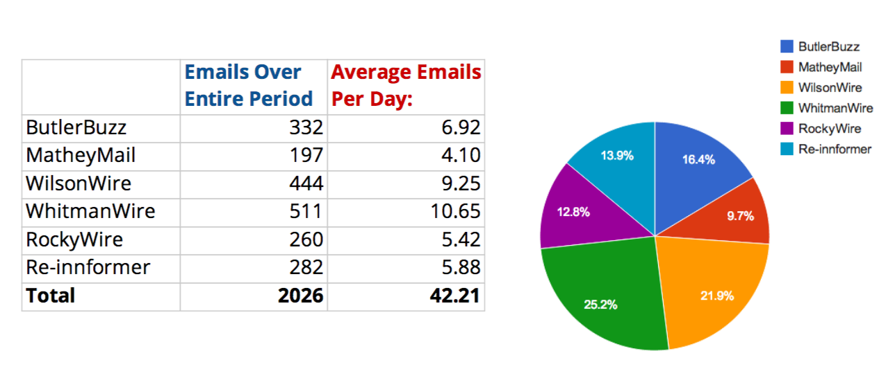
Whitman takes the lead with around 11 emails a day! Whitman and Wilson together account for almost half of all emails!
Overall, there are about 3800 subscribers (mostly undergrads) to the listservs. That’s nearly three-fourths of the 5300 Princeton undergrads[2]! From these, 863 sent emails in this time period, which is about 23% of those on the listservs. That leaves Princeton with three circles:
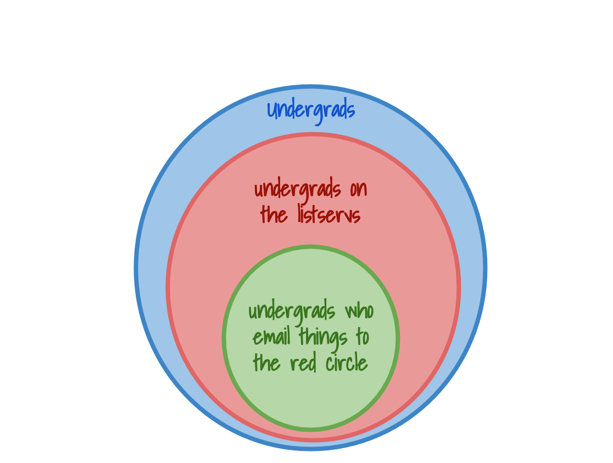
I unfortunately couldn't find any data to prove one of my suspicions:
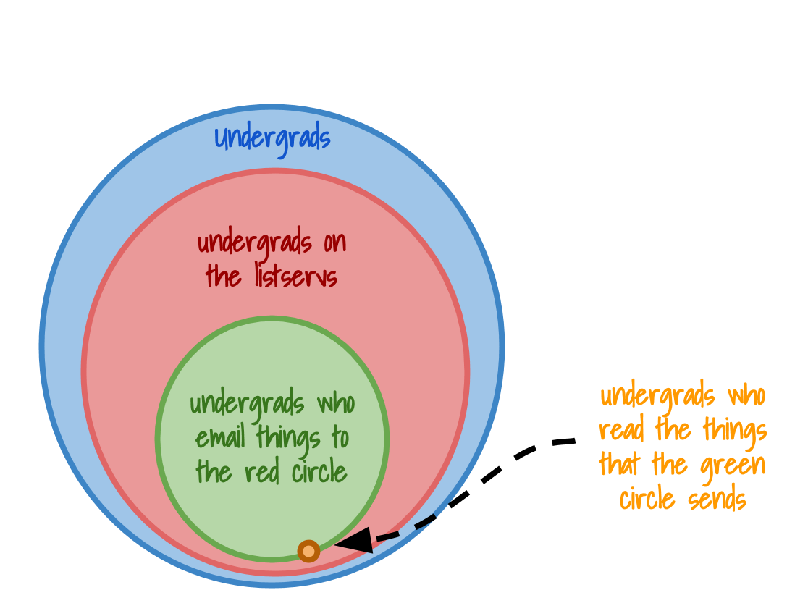
The subject line of an email gives you a quick summary of what the email’s about. Collecting the 2026 subject lines, I got 12,000 words on what exactly drives Princeton students to email six hundred other students (hint: it’s campus events and lost things). Here are the top few words that emerged:
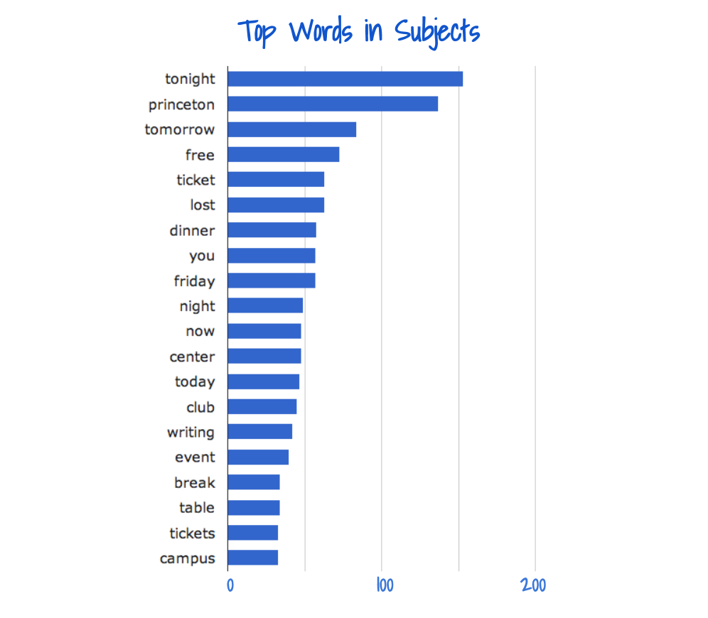
The top words confirm one of my suspicions: desperate Princeton student groups recruit just like desperate Princeton students:
I know we were going to meet at Princeton tonight but I lost my free ticket so maybe you can come with me to get dinner at the center tomorrow or maybe friday night or maybe even now?
Some other interesting trends emerged when I filtered by day. For instance, Sunday, predictably, is all lost coats from Saturday night and worship.
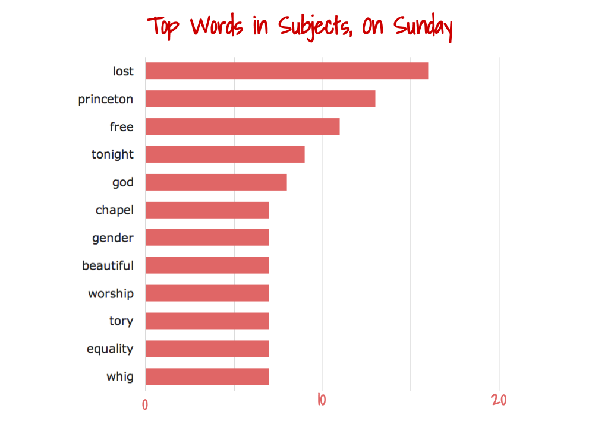
Also, by looking at which days of the week are mentioned in email subjects, we can figure out when events are happening on campus. For instance, a subject might be "Come to the ___ Show this Friday!". Based on this, here is when things happen:
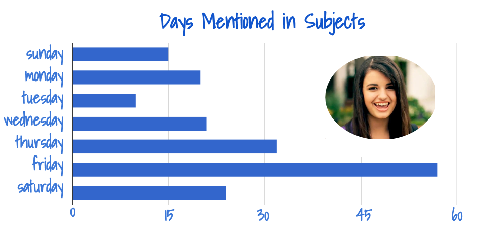
Rebecca Black had it right. Also, if you want your event to stand out, put it on a Tuesday.
By scraping the datestamps from emails, we can also get a picture of when people actually sit down to send out emails.
Here’s the whole picture:
There's a pretty consistent pattern there by week! Let's take a closer look. Here’s the days of the week that we send emails:
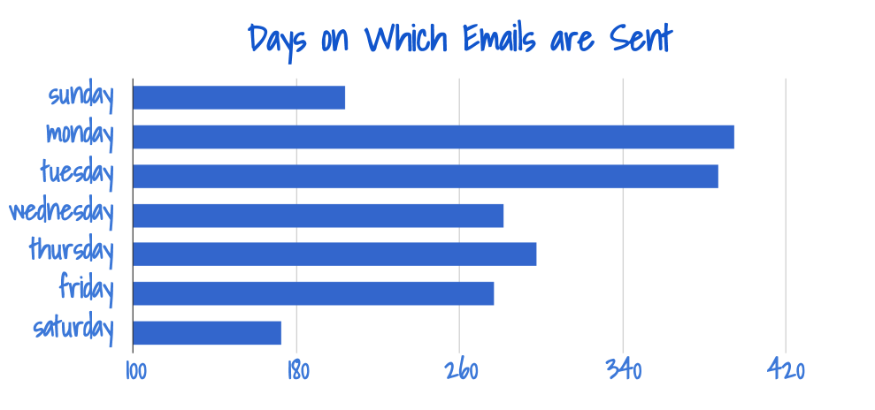
Turns out emails follow our workweek pretty well, with most emails from Monday to Friday, with a little rush on Monday to catch up from all the emails we should have been sending over the weekend. Interestingly, from above, Monday and Tuesday have among the least events happening, but the most emails sent. Wait, that actually makes a lot of sense.
Also, we can break it down all the way and look at exactly what time each email was sent:
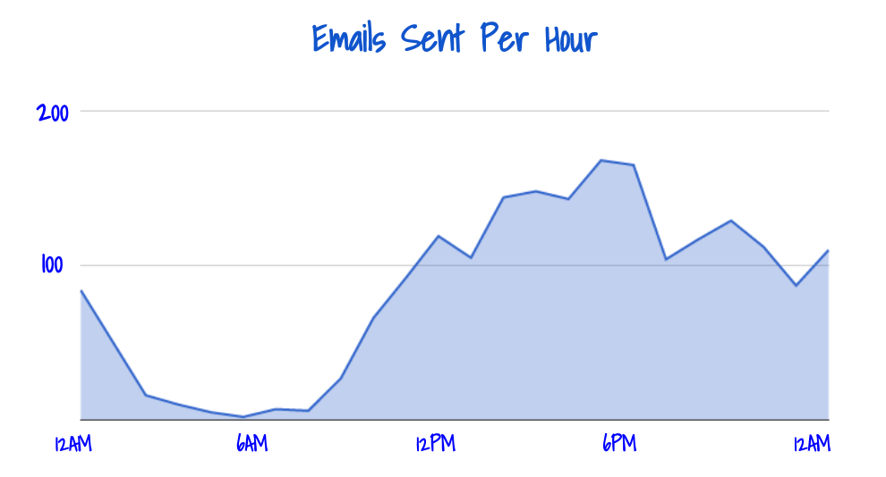
Hold on, that’s almost a perfect sine wave! Now, we can perfectly plot the Circadian Rhythm of a Princeton student.
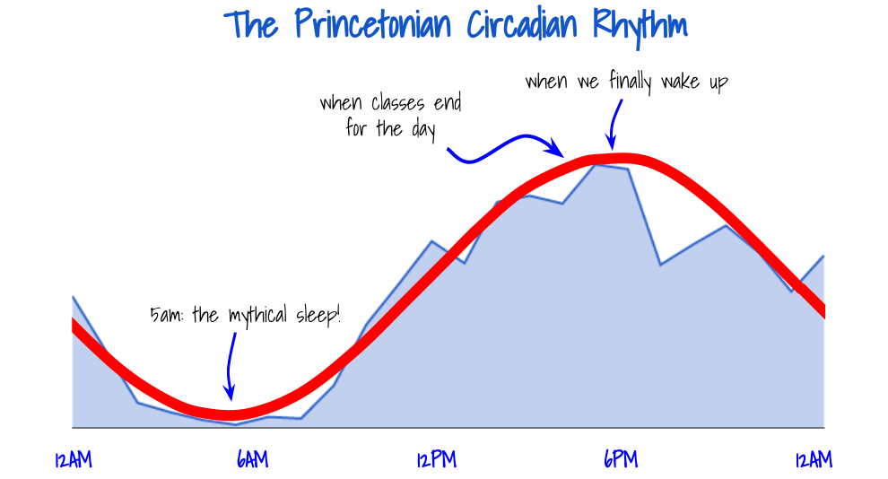
Interestingly, the peaks and lows correspond pretty well with a "standard" rhythm, though our deepest sleep is three hours afterward. It also gives a whole new validation to the phrase “It’s 5 o’clock somewhere.
The answer is pretty simple: all of them. By looking at senders, I was able to rank the top ten senders of every listserv. On average, for each listserv, the top ten people sent 20.9% of the emails! Twenty percent![3] The highest emails sent by any one person was 18, across all listservs.[4]
But the top ten people doesn't really tell you how spammy a listserv is overall; instead, I used Proofpoint! ProofPoint is the (capricious) spam filter that Princeton email uses. If you look at an email's full text (which includes a lot more information than just the email), you'll see something that looks like this:
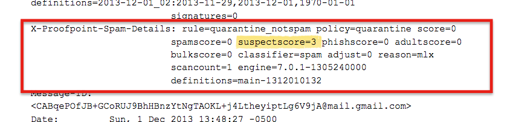
The "suspect score" is a number ranging from 0 to 100 that tells you how suspicious this email looks to ProofPoint. Too high a number and it'll block the message.
I collected the suspect scores of every email, and averaged it by listserv, seeking to determine once and for all which one is the spammiest.
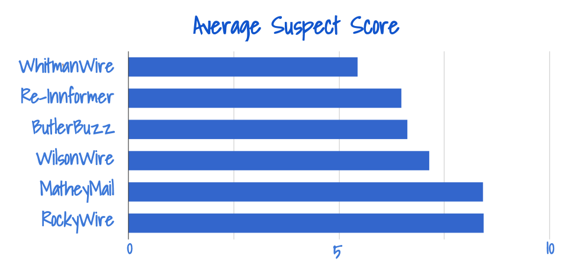
And the least spammy listserv is...
Whitman!
Whitman college: the best value for your inbox! The most emails and the least spam!
[1] To join a listserv, send an email to listserv@lists.princeton.edu with the body "subscribe listserv".
[2] From the Princeton grand list of listservs, there are 2561 subscribers on four of the six listservs, which I extrapolated to about 3840 subscribers of all six. The four listservs with available data are Butler (620 subscribers), Mathey (907), Forbes (461), and Whitman (573).
[3] The top senders in ButlerBuzz sent 19.57% of the emails; MatheyMail, 22.84%; WilsonWire, 18.47%; WhitmanWire, 18.69%; RockyWire, 21.15%; and Re-innformer, 24.47%.
[4] If you're curious, the top senders across all listservs (including people sending emails to multiple lists) are Lucas Broido (18 emails), Nemanja Antic (16), Michael Sockin (14), Briana Payton (13), and a tie between Jennifer Paslowski, Monica Lu, and famous Director of Student Life Mathey Frawley (12)!
All emails were scraped using python and IMAP, and analyzed using Python and Google Drive. Emails were scraped and organized using folders in my email. I collected information using on the sender name and email, subject, date, day of the week, time, suspect score and message text. Check out the Github code here.
Thanks to Shubhro Saha '15 for help with IMAP and python scripts! Check out his projects here.
© 2013


{kind=link}